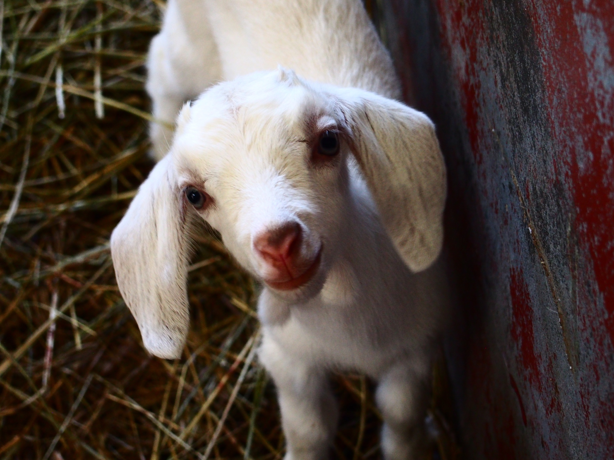
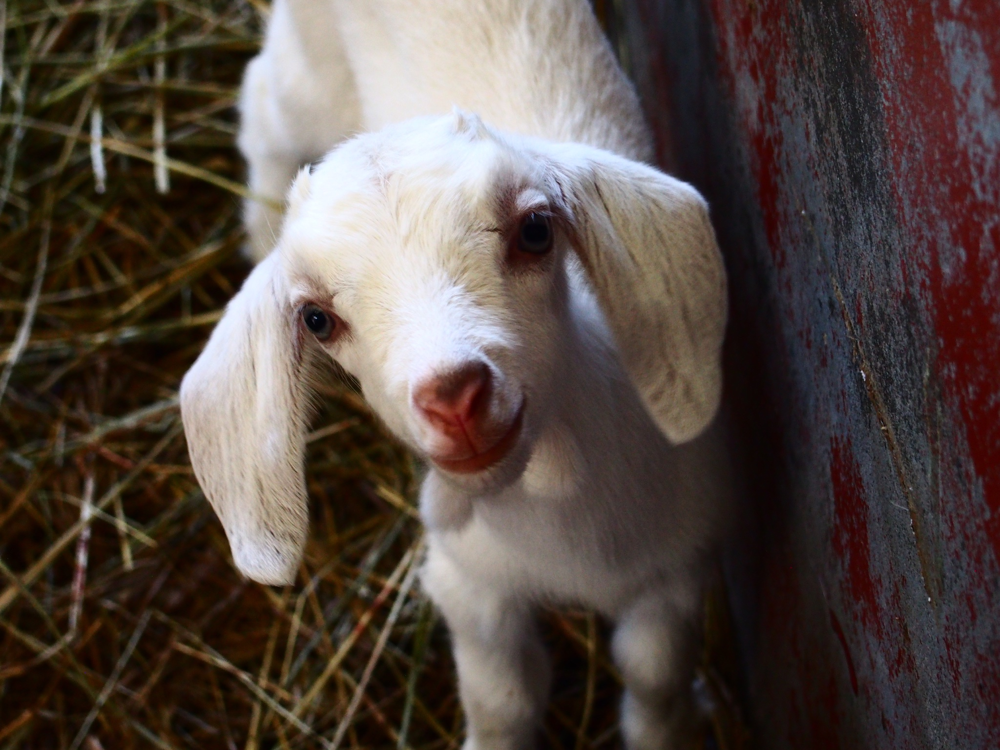

北海道は広大な自然が広がる北の大地。野生の動物ものびのびと暮らしています。
自然いっぱいの中で育った美味しい野菜や食材も魅力的です。
北海道は広大な自然が広がる北の大地。野生の動物ものびのびと暮らしています。
自然いっぱいの中で育った美味しい野菜や食材も魅力的です。
甘い野菜がごろごろ入ったスープカレー、身がたっぷりの美味しい海鮮丼、ジンギスカン、札幌ラーメン、夕張メロン、ROYCEやバターサンドなどのお菓子などが有名です。
写真は美瑛の青い池です。他にも富良野のラベンダー畑や知床五湖、釧路湿原、帯広温泉、小樽の街並、函館の夜景など見どころ満載。四季折々の美しさが体験できます。
北海道といえば寒さに強い白樺の木です。細くて白い木は雪のよう。夜には空が澄んでいるので星が綺麗に見えます。美しい自然の中で木々の音、鳥のさえずりに耳を澄ましてみてはいかがでしょうか。
有名な旭川動物園やクマ牧場、きつね牧場、ハイジ牧場などがあります。ドライブしていると野生の鹿やきつね、リスなどに出会えることも。大自然でのびのびと暮らす動物たちはとても気持ち良さそうです。

 
